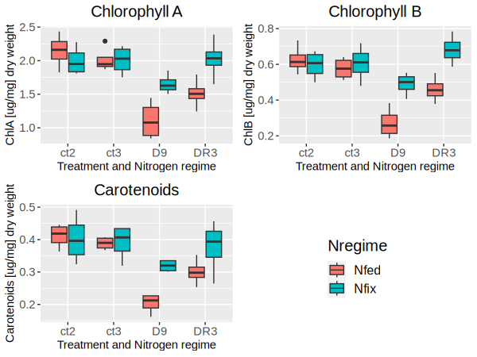
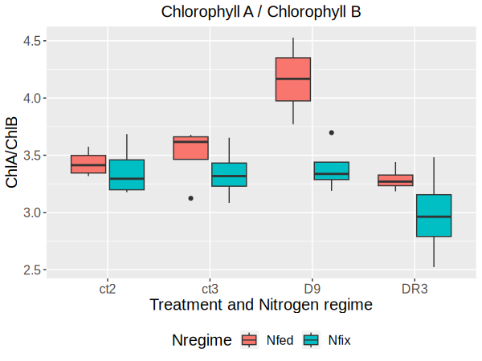
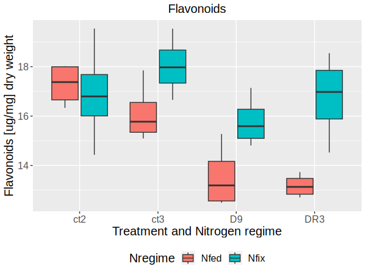
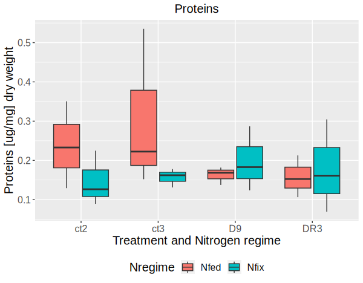

Ecosystems and Biogeochemistry laboratory
Abstract
The occurrence of drought stress has significant implications for plant growth and productivity.
In this study, we examined the impact of rewatering on M. truncatula and the role of symbiosis in assisting plants drought resistance. We measured primary and secondary metabolite concentrations in plants subjected to a nine-day drought followed by three days of rewatering. Two Regimes were established: Nitrogen-fed plants (Nfed) without symbionts and plants in symbiosis with Sinorhizobium meliloti (Nfix).
Our findings showed contrasting responses to rewatering, Nfix exhibited a faster recovery, with compound concentrations returning to levels similar to those of the control, whereas Nfed recovered at a slower rate, particularly in restoring flavonoid concentrations.
Furthermore, plants involved in nitrogen fixing showed less significant changes in compound concentrations when exposed to drought stress, highlighting the potential of symbiosis in mitigating the adverse effects of drought on plant physiology.
Introduction
Due to climate change the probability of worsening droughts has increased across the globe. Droughts are expected to not only become more severe but also more frequent and long lasting. A drought dangerously reduces the water supply, limiting plants access to water. Such a response to drought can negatively affect crop yields with studies showing that crop yields can drop up to 70% depending on factors such as what region the crops are grown in and what stage in crop development the drought occurs. (Farooq et al.,2017; Epule et al.,2013; Wheaton et al., 2008). In multiple countries which are already experiencing food instability this can have disastrous effects and can lead to outcomes such as famine.
Drought stress has significant implications for plant growth and productivity. Drought stress can be a result of low soil and atmospheric humidity,due to these conditions, in fact, there is a major imbalance between water intake from soil and the evapotranspiration flux (Lipiec et al., 2013). This type of stress can cause reduced leaf size, root proliferation, stem extension and disturbs plant-water relations and reduces water efficiency (Farooq et al., 2009).
There are many examples of symbiotic relationships present in every ecosystem, one such example is the mutualistic relationship between plants and nitrogen fixing bacteria.
Nitrogen is a vital nutrient for plant growth, but atmospheric nitrogen (N2) is not directly usable by plants. Nitrogen-fixing bacteria possess the ability to convert atmospheric nitrogen into ammonium through the nitrogenase protein complex. This complex breaks the triple covalent bond in between nitrogen atoms in N2, reducing it to ammonia by attaching three hydrogen atoms (Britannica, 2023; Postgate, 1982; Wagner, 2011).
These nitrogen fixing bacteria convert atmospheric nitrogen into useful nitrates which the plants can then utilize for growth and survival, in exchange legumes not only provide the bacteria a place to live, but they also supply them carbohydrates produced during photosynthesis.
Medicago truncatula a legume native to the Mediterranean region, known as barrelclover, is a widely cultivated plant species with a small diploid genome, rapid generation and seed production and an ability to self-fertilize. Due to the fact the genome of this legume has been sequenced it serves as a valuable model organism for studying legume biology and legume symbiotic relationships, particularly their mutualistic associations with nitrogen-fixing rhizobia (Young et al. 2011) When bacteria, such as Sinorhizobium meliloti is present in the soil the plant triggers root hair deformation and curling and cortical cell division which creates nodules which the bacteria then infects.
In our research, we investigated the effects of temporary drought conditions on Medicago truncatula. We examined changes in photosynthetic pigments, phenols, flavonoids, sugars and proteins. Additionally, we studied the plant's response to rewatering after drought stress and compared individuals that formed symbiotic relationships with nitrogen-fixing bacteria to those that did not.
Material and Methods
Plant materials
Prior to the laboratory experiments, eight treatments have been conducted. Two regimes were devised: Nfed with Medicago truncatula plants growing in a sterilized, nitrogen-fertilized soil and Nfix with plants in symbiosis with Sinorhizobium meliloti, a nitrogen-fixing bacteria. The treatments included two control groups (Ct2 and Ct3), plants were then subjected to drought stress for nine days (D9), and then rewatering for three days (D3). Samples were taken from both regimes at these time points (ct2 & D9; ct3 & D3) throughout the experiment.
All collected samples were freeze-dried using liquid nitrogen. They were then weighed, and four replicas were created for each treatment, with each replica containing 20mg of dried organic material. Sequential extraction of metabolic compounds was performed using a protocol involving multiple submersions, heatings, and centrifugations of the plant material in Acetone, Methanol, and Ethanol (at 80% concentrations).
Sequential extraction
Standard curves
Before analyzing the samples, standard curves were created using substances of known concentration which would be used to determine our unknown sample concentration. Glucose working solution was used for soluble carbohydrates, Gallic acid (a natural and stable phenol) working solution was used for phenols, and a quercetin stock for flavonoids. For protein estimation, Bradford assay was used, which involves the coomassie brilliant blue G-250 dye binding to arginine and amino acids and causes a color shift.
Photosynthetic pigments (chlorophyll a, chlorophyll b and carotenoids)
Using techniques outlined in Lichtenthaler and Wellburn (1955), pigments from dry leaves were extracted, vortexed, and centrifuged using 1ml of 80% acetone. Supernatants were collected and pellets were again centrifuged in 0.5ml of acetone. This procedure was repeated twice. By implication, 2 ml of pooled samples were collected and 50 μl from the pooled sample was then transferred alongside 200 μl of acetone onto microplates to measure at 663 nm, 646 nm, and 470 nm to determine levels of chlorophyll a, chlorophyll b and carotenoids using a spectrophotometer.
Extraction of soluble sugars, phenols, and flavonoids
The pellet used in the previous analysis was suspended in 1ml of 80% methanol and incubated at 95℃ for 30 minutes, cooled, and then centrifuged. Supernatant was then removed to a 2ml Eppi, 1ml of 80% EtOH was added to the pellet vortexed and incubated at 95℃ for 30 minutes, cooled, and then centrifuged. Supernatant was then removed to a 2ml Eppi. Supernatants from each extraction were pooled in a 2ml Eppi in the ratio of 1:0.5:0.5ml (acetone phase, ethanol phase, and methanol phase respectively) to estimate soluble carbohydrates, phenols, and flavonoids.
Estimation of soluble carbohydrates
Soluble carbohydrates were dehydrated with concentrated sulfuric acid, followed by the formation of furfural and a green-colored complex with anthrone. In line with protocol outlined in Hansen and Moller (1975), 100 μl of our sample solutions was mixed with 200 μl pre-chilled 72% H2SO4 and vortexed. Subsequently, 400 μl of anthrone reagent was added and then heated at 95°C for 15 minutes. To measure background absorbance, 100 μl of our sample and 600 μl of H2SO4 mixed. After cooling on ice, 250 μl of our samples were placed on microplates in duplicates to measure absorbance of under 630 nm wavelength. (Measured within 10 minutes after heating).
Estimation of phenols
Phenols were determined using the Folin-Ciocalteu method, which involved in a redox reaction and the formation of a blue chromophore using phosphomolybdic/phosphotungstic acid complexes. According to Biju et. al, (2014), 80 μl Folin Ciocalteu phenol reagent and 800 μl 7% Na2CO3 solution and distilled 700 μl H2O were added to 100 μl of our sample and incubated for 90 minutes at room temperature. A blank was created using 100 μl of our sample and 700 μl of dd H20. 250 μl from the final volume of 2 ml solution, were loaded on a microplate in 2 replicates, and measured absorbance at 550nm .
Estimation of flavonoids
The determination of flavonoids involved the formation of complexes with aluminum chloride, resulting in a pink color. Using the Aluminium chloride method after Chang et. al., (2002) and Biju et.al., (2014), samples were mixed with ddH20 and 5% of NaNO2 , 10 % AlCl3, and 1 M of NaOH were added. Subsequently, 250 μl from the final volume of 2 ml was loaded in 2 replicates on a microplate and measured at 510nm.
Extraction of Protein
For protein estimation, Bradford assay was used, which relies on the formation of non-covalent complexes between proteins and the coomassie brilliant blue G-250 dye, leading to a blue color shift. Proteins were extracted from the pellet which was obtained earlier in the experiment and separated using SDS PAGE technique according to protocol of SDS PAGE Protein extraction, MoSys, PMInt, Proteomics course.
Data analysis
Using R (version 4.2.1), Analysis of Variance (ANOVA) was performed to analyze the concentrations obtained by the four groups (each with one replica) of the plant responses to drought and rewatering and to compare the various treatments. Additionally, boxplots were generated to visually represent these responses and treatment comparisons.
Results
Photosynthetic pigments
The concentrations of chlorophyll a, b, and carotenoids showed a similar trend seen in all pigments (Figure 1), with Nfed plants being more affected by the drought period compared to the Nfix plants. In the D9 samples of Nfed, a significant drop (Treatments: P= 0.000279*** (chlorophyll a); 0.000921*** (chlorophyll b); 0.000151*** (carotenoids)) was observed in all pigments, with concentrations decreasing by approximately half for chlorophyll a and carotenoids, and by approximately a third for chlorophyll b. After three days of re-watering, Nfed plants showed a recovery almost up to the control levels. Conversely, Nfix samples exhibited only a slight decrease in pigment concentration during drought, which was not statistically significant for all three pigments. Following the rewatering period, both chlorophyll a and Carotenoid samples fully recovered, while chlorophyll b concentrations exceeded the control levels although not significantly. In addition, we computed the ratio between chlorophyll a and chlorophyll b (Figure 2) and observed a notable increase in the ratio during the drought for Nfed plants, while the ratio remained relatively stable for Nfix plants (Nregime: P= 0.001276** ). However, for both regimes, there was a decline in the ratio following the rewatering period, resulting in lower levels compared to their respective drought concentrations.
 
Flavonoids
Flavonoid levels were significantly impacted in the Nfed regime during the drought (Treatment: P=0.000213***), and there was no recovery observed after re-watering, with concentrations remaining similar to the D9 sample and significantly lower than the control group. On the other hand, there were no significant differences within the Nfix treatments, with only a minor, non-significant decrease during the drought with recovery shown upon re-watering (Treatment: P=0.302)(Figure 3).
Proteins
No significant changes in protein levels were observed during or after the stress period for both Nfed and Nfix samples (Treatment: P=0.743) (Nregime: P =0.296) (Figure 4).
Soluble carbohydrates
The levels of soluble carbohydrates remained consistent across all treatments and nitrogen regimes, showing no significant changes during the drought or after rewatering (Treatment:P=0.958)(Nregime: P=0.717) (Figure 5).
Distinct clustering was observed of carbohydrate concentrations into two groups. Groups 2&3 consistently exhibited lower values, while groups 1&4 consistently displayed higher values. The values which groups 1&4 observed were almost three times higher than values which were taken by groups 2&3. However, even when considering these groups separately, no significant relationships were observed.
Phenols
There are no significant changes in phenol concentration for both Nfed and Nfix both during the drought and after rewatering (Treatment: P=0.274; Nregime:P=0.200) (Figure 6).
However, a slight increase in phenol concentrations was observed during the drought period, which subsequently decreased to levels comparable to the control group after 3 days of rewatering.
Discussion
The concentration of pigments, including chlorophyll a, b, and carotenoids, exhibited a similar trend across all nitrogen regimes, characterized by a decrease during the drought and a subsequent recovery to control levels after rewatering. Their decreased concentration during water stress periods could be related to the closure of stomata, in fact, with reduced CO2 concentration and overall photosynthetic activity, pigments are not as actively required, leading to a reduced production and higher susceptibility to degradation, finally resulting in decreased concentrations (Antolín et al., 1995; Cornic & Massacci, 1996; Sourour, 2017).
chlorophyll b is one of the pigments most sensitive to degradation during water-stressed periods, therefore, the ratio between chlorophyll a and b, can be used as an indicator of plants susceptibility to droughts (Antolín et al., 1995; Sourour, 2017).
In this regard, in the Nfix regime, even though there has been a decrease for all the estimated pigments, the ratio between chlorophyll a and chlorophyll b didn’t undergo visible changes, resulting in a lower relative degradation of chlorophyll b and ultimately suggesting that Nfix plants were less affected by water stress compared to Nfed plants.
Flavonoids play crucial roles in protecting plants from infections, defending against UV radiation and acting as antioxidants especially under drought stress (Hernández et al., 2006). The ANOVA analysis showed significant differences between concentrations measured during drought and after rewatering for Nfed, indicating a notable impact of drought on flavonoid concentrations. However, for Nfix no significant differences were observed, with only a slight, non-significant, drop during drought that recovered upon rewatering. It is possible that M. truncatula may not heavily rely on flavonoids as a mechanism for drought tolerance. Furthermore, the steady concentration in the Nfix treatment could be attributed to the overall lower susceptibility of Nfix plants to water limitation during the drought period, as well as the crucial role of flavonoids in symbiotic infection initiation and maintenance.
Previous literature shows that the closure of stomata due to drought stress leads to the generation of Reactive Oxygen Species (ROS) (Farooq et al., 2009), which flavonoids are known to inhibit (Hernández et al., 2006), meaning we should have seen an increase in flavonoid concentrations. However our results show a decrease in concentration in plants exposed to drought stress compared to the control group which does not align with the expected response.
Phenols are diverse secondary metabolites involved in defense mechanisms against ultraviolet radiation, pathogen aggression, and other stressors (Hernández et al., 2006). We didn't observe any significant changes for both Nfed and Nfix during the drought and after rewatering, however, a slight increase in phenol concentrations was observed during the drought, followed by a return to levels similar to the control group after 3 days of rewatering. The varying and necessary uses of phenols may contribute to the lack of significant relationships between treatments and N regimes.
In contrast to previous literature , we did not observe a significant increase in soluble carbohydrates or proteins during the drought period, which is typically associated with reducing osmotic pressure (Haddoudi, 2021; Keller & Ludlow, 1993). The concentrations of soluble carbohydrates remained steady at control levels, but it is possible that changes occurred in their composition; different sugars and other carbohydrates can indeed play specific roles in response to abiotic stresses. The closure of stomata during drought greatly reduces carbohydrates which are involved in photosynthesis and involved in the Calvin cycle (Xue et al., 2008). Disaccharide sugars play a role in inhibiting ROS species which may also be the reason there was no increase in flavonoid concentrations. Keller and Ludlow observed a change in composition of carbohydrates in pigeonpea plants from sucrose to pinitol when under drought stress (Keller & Ludlow, 1993).
Similarly, the protein concentration did not exhibit significant changes, despite the potential impact of drought on rubisco expression and activity. Although when exposed to drought plants are known to increase certain proteins such as transporter proteins, dehydrins and heat shock proteins. (Riyazuddin et al., 2017). Similarly to carbohydrates it may be a change in composition which accounts for the lack of significant change in concentrations of proteins.
Plants in symbiosis with nitrogen-fixing organisms have demonstrated greater resilience to water stress compared to Nfed plants, showing more successful recovery after rewatering. Several hypotheses can explain this increased tolerance and recovery: firstly, symbionts have the ability to enhance total plant root biomass and surface area, allowing for enhanced soil exploration and retrieval of remaining water resources (Antolín et al., 1995). Additionally, symbionts can stimulate the production of abscisic acid (ABA), which plays a crucial role in inducing early stomatal closure, resulting in reduced transpiration rates and improved water use efficiency (Paradiso et al., 2017). Moreover, plants with nitrogen-fixing symbiosis exhibit slower and more steady growth compared to those in the nitrogen-fed regime (Antolín et al., 1995; Haddoudi et al., 2021; Lodeiro et al., 2000); this slower growth can contribute to a lower total leaf surface area. Lastly, symbiosis can influence the morphological structure of leaves, resulting in smaller and denser stomata, which can further increase water efficiency (Fenta et al., 2020).
It is important to acknowledge that the previous results were obtained by four different groups and that many of the group members were inexperienced in laboratory work, consequently leading to several errors during the extractions. The limited number of replicas made it challenging to identify and address the unreliable values or to accurately estimate their impact.
As a result, there is a high likelihood of a reduced number of significant relationships or incorrect patterns in the data. To obtain more reliable values, it would be necessary to increase the number of replicas and conduct additional extractions and analyses, thereby expanding the total sample size.
Conclusions
What is the impact of rewatering on M. truncatula?
In our experiments, we observed significant relationships between photosynthetic pigments and flavonoids within treatment and nitrogen regimes. Generally, rewatering partially restored the concentrations of these compounds back to control levels. In the nitrogen fixation regime, the recovery was quicker, with concentrations reaching almost the same levels as the control. However, in the N-fed regime, flavonoid compounds did not recover after watering, while the recovery of photosynthetic pigments was relatively slow.
Does symbiosis play a role in drought tolerance?
When comparing the N-fed and nitrogen fixation regimes, individuals involved in nitrogen fixation through symbiosis appeared to be less affected by drought stress. They exhibited fewer changes compared to the control groups and showed better recovery from the drought. These observations suggest that symbiosis plays an important role in drought tolerance in M. truncatula.
References
- Antolín, M.C., Yoller, J., Sánchez-Díaz, M. (1995) Effects of temporary drought on nitrate-fed and nitrogen-fixing alfalfa plants. Plant Science 107(2) 159-165. Antolín, 1995
- Britannica, T. Editors of Encyclopaedia (2023). nitrogen fixation. Encyclopedia Britannica. Britannica, 2023
- Cornic, G., Massacci, A. (1996). Leaf Photosynthesis Under Drought Stress. In: Baker, N.R. (eds) Photosynthesis and the Environment. Advances in Photosynthesis and Respiration, vol 5. Springer, Dordrecht. Cornic, 1996
- Epule, E. T., Peng, C., Lepage, L., & Chen, Z. (2014). The causes, effects and challenges of Sahelian droughts: a critical review. Regional environmental change, 14, 145-156. Epule, 2014
- Farooq, M., Wahid, A., Kobayashi, N. et al. (2009) Plant drought stress: effects, mechanisms and management. Agron. Sustain. Dev. 29, 185–212. Farooq, 2009
- Farooq, M., Gogoi, N., Barthakur, S., Baroowa, B., Bharadwaj, N., Alghamdi, S. S., & Siddique, K. H. (2017). Drought stress in grain legumes during reproduction and grain filling. Journal of Agronomy and Crop Science, 203(2), 81-102. Farooq, 2017
- Fenta, B.A., Beebe, S.E., Kunert, K.J. (2020) Role of fixing nitrogen in common bean growth under water deficit conditions. Food Energy Secur. 9:e183. Fenta, 2020
- Haddoudi, L., Hdira, S., Hanana, M., Romero, I., Haddoudi, I., Mahjoub, A., Ben Jouira, H., et al. (2021). Evaluation of the Morpho-Physiological, Biochemical and Molecular Responses of Contrasting Medicago truncatula Lines under Water Deficit Stress. Plants, 10(10), 2114. MDPI AG. Retrieved from Haddoudi, 2021
- Hernández I., Alegre L., Munné-Bosch S. (2006) Enhanced oxidation of flavan-3-ols and proanthocyanidin accumulation in water-stressed tea plants. Phytochemistry, 67(11), 1120-1126. Hernández, 2006
- Keller F., Ludlow M. M., (1993) Carbohydrate Metabolism in Drought-Stressed Leaves of Pigeonpea (Cajanus cajan), Journal of Experimental Botany, 44(8), 1351–1359. Keller, 1993
- Lipiec, J., Doussan, C., Nosalewicz, A., & Kondracka, K. (2013). Effect of drought and heat stresses on plant growth and yield: a review. International Agrophysics, 27(4). Lipiec, 2013
- Lodeiro, A. R., González, P., Hernández, A., Balagué, L. J., & Favelukes, G. (2000). Comparison of drought tolerance in nitrogen-fixing and inorganic nitrogen-grown common beans. Plant science : an international journal of experimental plant biology, 154(1), 31–41. Lodeiro, 2000
- Paradiso, R., Arena, C., De Micco, V., Giordano, M., Aronne, G., & De Pascale, S. (2017). Changes in Leaf Anatomical Traits Enhanced Photosynthetic Activity of Soybean Grown in Hydroponics with Plant Growth-Promoting Microorganisms. Frontiers in plant science, 8, 674. Paradiso, 2017
- Postgate, J. R. (1982). Biology Nitrogen Fixation: Fundamentals. Philosophical Transactions of the Royal Society of London. Series B, Biological Sciences, 296(1082), 375–385. Postgate, 1982
- Riyazuddin, R., Nisha, N., Singh, K., Verma, R., & Gupta, R. (2022). Involvement of dehydrin proteins in mitigating the negative effects of drought stress in plants. Plant Cell Reports, 41(3), 519-533. Riyazuddin, 2022
- Sourour, A. (2017). A review: Morphological, physiological, biochemical and molecular plant responses to water deficit stress. The International Journal of Engineering and Science. 06. 01-04. Sourour, 2017
- Wagner, S. C. (2011). Biological Nitrogen Fixation. Nature Education Knowledge 3(10):15. Wagner, 2011
- Wheaton, E., Kulshreshtha, S., Wittrock, V., & Koshida, G. (2008). Dry times: hard lessons from the Canadian drought of 2001 and 2002. The Canadian Geographer/Le Géographe canadien, 52(2), 241-262. Wheaton, 2008
- Xue, G. P., McIntyre, C. L., Glassop, D., & Shorter, R. (2008). Use of expression analysis to dissect alterations in carbohydrate metabolism in wheat leaves during drought stress. Plant molecular biology, 67(3), 197–214. Xue, 2008
- Young, N. D., Debellé, F., Oldroyd, G. E., Geurts, R., Cannon, S. B., Udvardi, M. K., ... & Roe, B. A. (2011). The Medicago genome provides insight into the evolution of rhizobial symbioses. nature, 480(7378), 520-524. Young, 2011